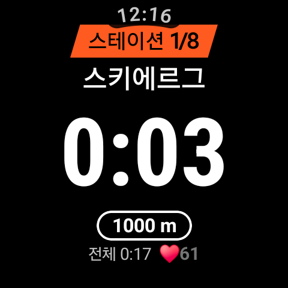
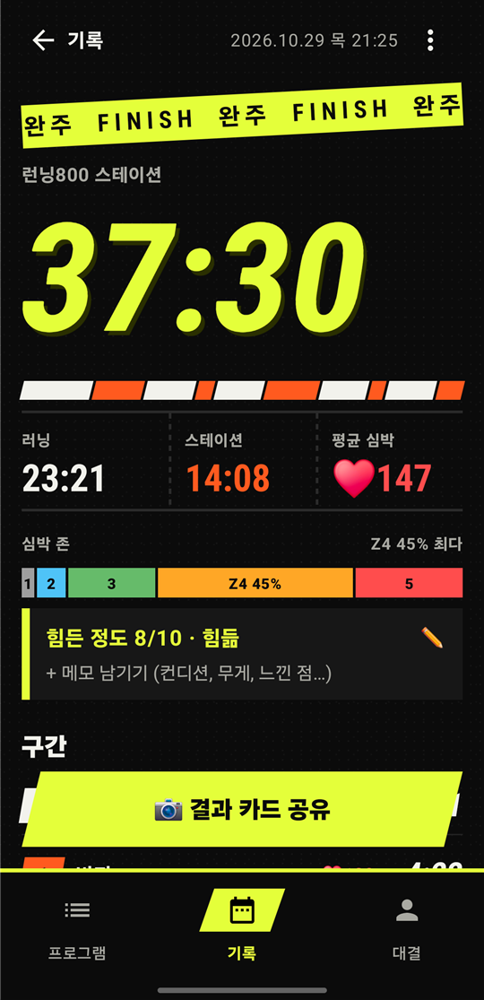
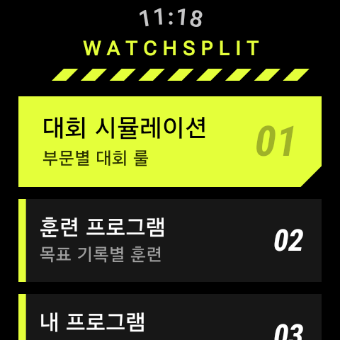
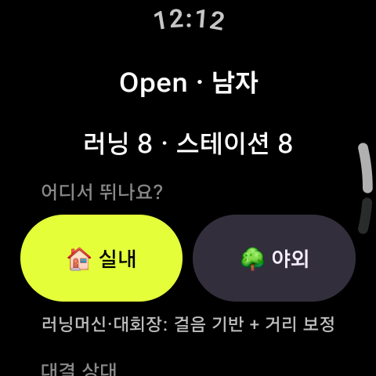
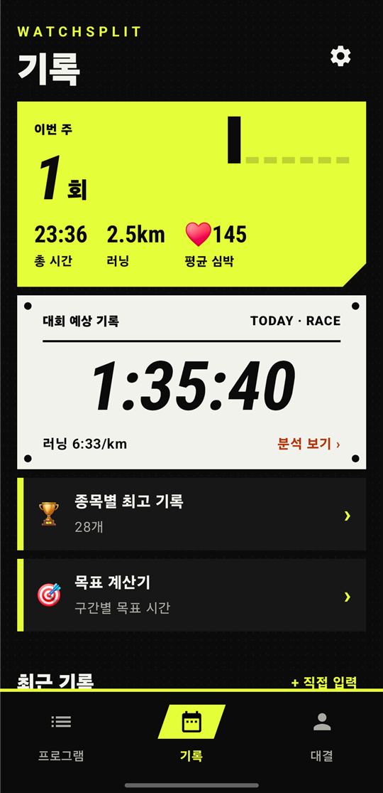
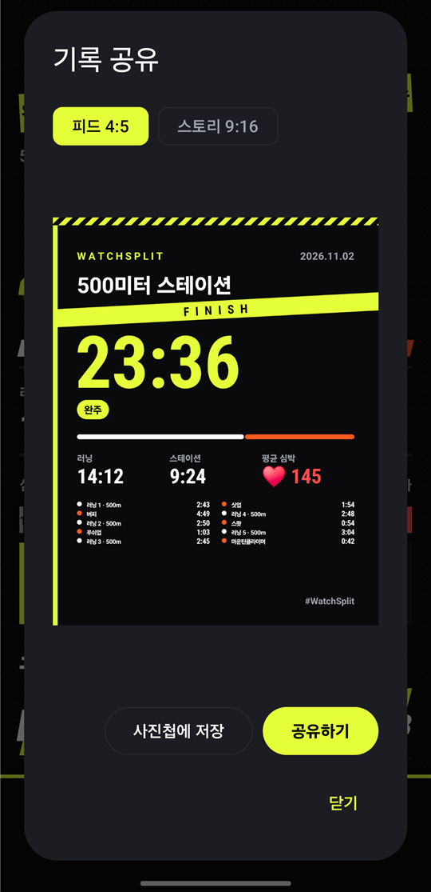

GALAXY WATCH · WEAR OS
갤럭시워치로 하는 하이록스 형식 훈련, 구간마다 기록하세요
러닝·스테이션마다 시간, 페이스, 심박. 분석은 폰에서.


갤럭시워치를 차고 하이록스 형식 훈련을 한다면. 가입 없이, 한국어로.
훈련할 때 필요한 것만
손목에서는 재고, 폰에서는 봅니다.
버튼 한 번에 다음 구간
땀에 젖은 손으로도 확실하게. 진동이 오면 넘어간 거예요. 넘기자마자 또 누른 건 무시해요.
대회 형식 시뮬레이션
Open·Pro, 여자·남자, 싱글·더블. 부문별 거리와 무게가 미리 들어 있어요.
페이스 진동과 목표 페이서
목표나 대결 상대보다 늦거나 빠르면 손목이 알려 줘요. 정한 거리에 닿아도 진동이 와요. 원하는 목표 기록으로 달리는 🎯 목표 페이서는 프로예요.
대회 예상 기록
내 러닝 페이스와 스테이션 기록으로 완주 시간을 추정하고, 스테이션별 강점과 약점을 보여 줘요.
친구에게 도전장
카카오톡으로 대결 코드를 보내면, 친구는 내 구간 기록과 워치에서 대결해요. 가입은 필요 없어요.
결과 카드 공유
인스타그램 피드·스토리 크기의 기록 카드를 만들어 사진첩에 저장하거나 바로 공유해요.
3단계로 시작하기
처음 한 번만 설정하면, 다음부터는 시작만 누르면 돼요.
폰과 워치에 설치
폰에서 WatchSplit을 설치하면 워치에도 같은 앱을 설치할 수 있어요.
워치에서 고르고 시작
대회 시뮬레이션 → 부문 → 싱글·더블 → 실내·야외 → 시작.
끝나면 폰에서 확인
기록이 폰으로 넘어와요. 구간 분석, 예상 기록, 공유 카드를 볼 수 있어요.
손목에서는 크게, 한눈에
달리면서 보기 좋게 숫자를 크게. 러닝과 스테이션은 화면에서 바로 구분돼요.



워치와 폰이 나눠서 해요
운동 중에는 폰을 꺼낼 필요가 없어요.
⌚ 워치
- 구간 시간, 러닝 페이스·거리, 심박
- 구간 전환·목표 페이스·거리 도달 진동
- 운동 중 화면이 꺼지지 않아요(배터리를 더 써요)
- 일시정지, 구간 되돌리기
📱 폰
- 내 프로그램 만들어 워치로 보내기
- 기록, 구간 분석, 대회 예상 기록
- 친구 도전장, 결과 카드 공유
- 워치 없이 한 운동 직접 입력, Health Connect 저장



내 기록은 내 워치와 폰에
- 개발자 서버 없음
- 회원가입 없음
- 광고 없음
- 기록 백업 파일, Strava용 TCX 내보내기
- Health Connect 저장은 켤 때만
기록은 무료, 빨라지게 돕는 건 프로
처음 구독하면 14일 무료 체험 · 월 구독 3,900원(예정), 연 구독은 더 저렴해요. 가격은 출시 때 Google Play에 안내돼요.
무료
0원
- 구간 타이머, 대회 형식 시뮬레이션
- 대회 부문에서 내 최고 기록과 대결
- 친구 도전장, 결과 카드 공유
- 기록, 대회 예상 기록, 종목별 최고 기록
- 페이스·거리 진동
- 집중 훈련 구간 · 스테이션 후 러닝 1줄씩
- 내 프로그램 3개
프로
월 3,900원 (예정)
- 🎯 목표 페이서: 목표 기록 페이스와 실시간 대결
- 구간 분석 전체: 집중 훈련 구간 · 강점 · 구간별 표
- 스테이션 후 러닝 전체, 심박 존별 시간
- 훈련 프로그램 2~5회차 전체 (24개)
- 훈련·내 프로그램에서도 내 최고와 대결, 최근 기록과 대결
- 내 프로그램 무제한 · 목표 구간 계산기 전체
폰에서 구매하면 워치에서도 자동으로 열려요. 구독은 Google Play에서 언제든 해지할 수 있어요.
자주 묻는 질문
애플워치나 가민에서도 되나요?
아니요. 갤럭시워치 같은 Wear OS 워치와 안드로이드 폰에서만 돼요.
러닝머신에서 거리가 안 맞아요.
실내에서는 걸음 수로 거리를 재서 짧거나 길게 나올 수 있어요. 워치 설정의 거리 보정으로 오차를 줄일 수 있어요. 방법 보기
기록이 서버에 올라가나요?
아니요. 기록은 워치와 폰에만 저장돼요. 개발자는 기록을 볼 수 없어요.
워치만 있어도 되나요?
운동 기록은 워치만으로도 돼요. 기록 보기, 분석, 내 프로그램, 도전장은 폰 앱이 필요해요.